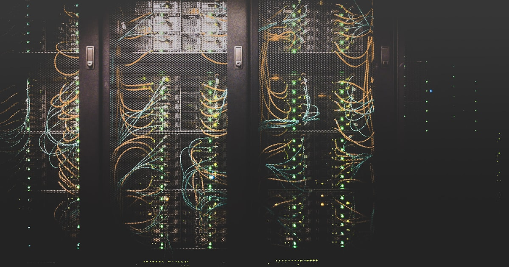
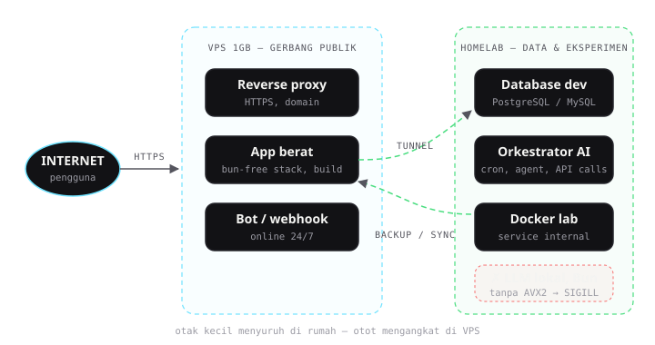

Infra & Hardware
Homelab untuk AI: Apa yang Bisa, Apa yang Tidak

Semua orang di Twitter/X berlomba menunjukkan rack server mereka. Saya di sisi lain punya mini PC bekas dengan CPU yang tidak punya instruksi AVX2, dan satu VPS kecil 1GB RAM. Artikel ini tentang apa yang masih bisa dilakukan hardware seadanya untuk kebutuhan AI, apa yang sudah benar-benar mentok, dan cara saya memutuskan "kapan pindah ke VPS".
Neraka instruksi CPU: AVX2 dan temannya
Mulai dari luka yang paling dalam. CPU homelab saya tidak punya AVX2, SSE4.2, dan POPCNT. Kedengarannya sepele — sampai kamu sadar hampir semua tooling modern menganggap instruksi itu ada.
Gejalanya konsisten dan menyebalkan: proses mati mendadak dengan exit code 132 (SIGILL — illegal instruction), tanpa pesan error yang menjelaskan apa-apa. Korban pertama: Bun, runtime JavaScript yang lagi naik daun. Korban kedua: beberapa build Node modern. Korban ketiga: Nakama (game server) yang tidak bisa di-build sama sekali di mesin itu.
$ bun --version
[1] 132 illegal hardware instruction bun --versionPelajaran #1: cek dulu cat /proc/cpuinfo | grep -o avx2 sebelum membeli/apapun plan yang melibatkan tooling modern. Lima detik ini menghemat jam debugging.
Yang ternyata BISA di homelab lemah
Berita baiknya: banyak banget yang masih bisa.
- Docker + panel manajemen — jalan mulus. Semua container ringan (reverse proxy, DNS lokal, monitoring ringan) aman.
- Database untuk dev — PostgreSQL dan MySQL dengan beban pengembangan normal santai saja.
- Tooling AI berbasis API — ini yang sering dilupakan: kalau AI-nya berjalan di cloud (API call), yang di homelab cuma orkestrator. Hermes, cron job, webhook handler — semuanya jalan mulus karena beban komputasi ada di server penyedia.
- Proxy & tunneling — satu VPS kecil sebagai gerbang + homelab di belakangnya. Traffic halaman web biasa sangat ringan.
Intuisinya begini: homelab lemah masih sanggup jalan sebagai "otak kecil yang menyuruh", bukan "otot yang mengangkat".
Yang TIDAK bisa (dan tidak worth dipaksakan)
- Inferensi LLM lokal yang serius. Dengan CPU tanpa AVX2 dan tanpa GPU, lupakan. llama.cpp pun ada build khusus, tapi kecepatannya bikin menangis. Kalau butuh LLM lokal, yang realistis cuma model super-mini untuk eksperimen.
- Runtime JS modern — Bun mati
SIGILL. Node versi tertentu juga bermasalah. Solusinya bukan dipaksa, tapi dipindah. - Build berat. Compile project besar di RAM kecil = OOM killer datang menjemput. Yang menyelamatkan: build di VPS, artefak dipindah balik.
Aturan keputusan: homelab atau VPS?
Setelah sekian kali jatuh-bangun, aturan yang saya pakai sekarang cuma tiga pertanyaan:
- Apakah prosesnya butuh instruksi CPU modern? (AVX2 dkk.) → Ya = VPS. Cek dulu, jangan harap-harap.
- Apakah peak RAM-nya di bawah ~70% kapasitas? → Tidak = VPS. OOM killer tidak pernah kasihan.
- Apakah dia harus online 24/7 dan diakses publik? → Ya = VPS (dengan tunneling dari homelab kalau data sensitif tetap di rumah).
Praktiknya di setup saya: VPS 1GB jadi gerbang publik dan rumah bagi aplikasi yang berat, homelab jadi rumah bagi data, eksperimen, dan service internal. Pembagian kerja yang jujur soal kemampuan masing-masing.

Homelab itu bukan tentang kapanpun bisa. Tapi tentang tahu persis batasnya, dan berhenti memaksakan.
Biaya nyata
Supaya konkret: VPS 1GB yang saya pakai biayanya lebih murah dari dua gelas kopi per bulan. Kombinasi homelab (listrik yang sudah saya bayar apa pun yang terjadi) + VPS kecil itu menutup 90% kebutuhan eksperimen AI saya. Sisa 10% — inferensi berat, build besar — cukup disewa sesuai kebutuhan.
Penutup
Homelab untuk zaman AI bukan soal punya hardware keren. Ia soal tahu di mana pekerjaan harus jalan: orkestrasi dan data di rumah, komputasi berat di tempat yang memang sanggup. Hardware lemah mengajarkan satu hal yang tidak diajarkan server mahal: disiplin arsitektur.
Sedang membangun setup serupa dan mentok di bagian tertentu? Kontak saya — atau share pengalamanmu lewat Threads.